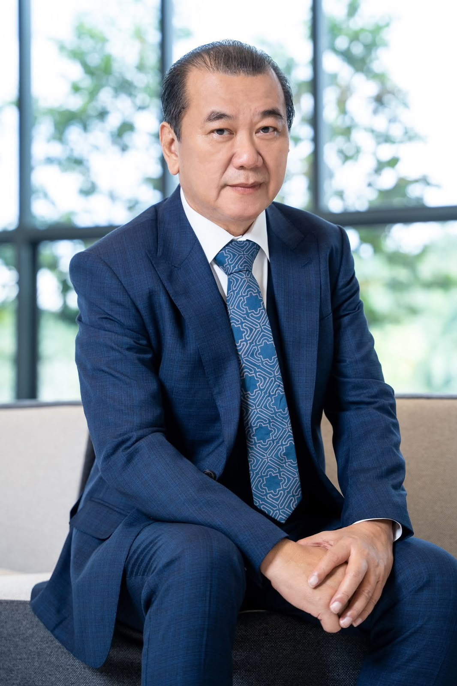

01
Quality Manufacturing
Controlled manufacturing practices designed to support consistency and product quality.
Learn about our role as a manufacturing facility of DXN Holdings Bhd, Malaysia, supporting DXN product manufacturing in Nepal.
Dexin Manufacturing Nepal Pvt. Ltd. is one of the manufacturing facilities of DXN Holdings Bhd, Malaysia, supporting the production of DXN products in Nepal.

As part of DXN Holdings Bhd, Malaysia, our Nepal facility supports DXN's manufacturing and product operations in Nepal through focused manufacturing activities.
Our factory is focused on quality manufacturing, food safety, hygiene, regulatory compliance and continuous improvement.
We aim to maintain a modern, efficient and responsible manufacturing environment that supports consistent production and the wider objectives of DXN in Nepal.
Explore Our ProductsOur Nepal operations form part of the wider DXN organization established in Malaysia, with a shared focus on quality, health-focused products, manufacturing and continuous development.
DXN Holdings Bhd, Malaysia, is the wider organization behind the DXN brand and its international operations.
Dexin Manufacturing Nepal Pvt. Ltd. is one of its manufacturing facilities, supporting the production of DXN products for the Nepal market.
Our role is focused on Nepal manufacturing operations while maintaining alignment with the broader DXN manufacturing and quality approach.
Malaysia-based DXN heritage supported by dedicated manufacturing operations in Nepal.

Datuk Lim Siow Jin founded DXN in Malaysia in 1993. His interest in mushrooms and their potential health benefits became an important foundation for the development of DXN and its health-focused product portfolio.
His vision helped shape DXN's integrated approach to cultivation, manufacturing and marketing and contributed to the company's international development.
Dexin Manufacturing Nepal Pvt. Ltd. is part of this wider DXN organization, with its focus specifically on manufacturing operations in Nepal.
Our Nepal factory is focused on the manufacturing priorities that support reliable and responsible production.
Controlled manufacturing practices designed to support consistency and product quality.
Clean, controlled and hygienic practices are integral to responsible manufacturing.
Attention to applicable regulatory requirements and documented controls supports our operations.
We continually review processes, performance and practices to strengthen manufacturing operations.
Dexin Manufacturing Nepal Pvt. Ltd. supports the production of DXN products in Nepal as one of the manufacturing facilities of DXN Holdings Bhd, Malaysia.
Our work in Nepal is centered on building a quality-driven manufacturing environment that supports DXN products and operations in the country.
Dexin Manufacturing Nepal Pvt. Ltd. operates as one of the manufacturing facilities of DXN Holdings Bhd, Malaysia.
Our factory focuses on quality manufacturing, food safety, hygiene and controlled production practices.
We continue to strengthen compliance, efficiency, quality and continuous improvement across our Nepal manufacturing operations.
Manufacturing is more than producing a product. It is about maintaining consistency, controlling processes and creating an environment where quality, food safety and responsibility are considered at every stage.
At Dexin Manufacturing Nepal, we are committed to supporting DXN product manufacturing through quality-focused practices, regulatory compliance and continuous improvement.
Discover Our Quality Approach